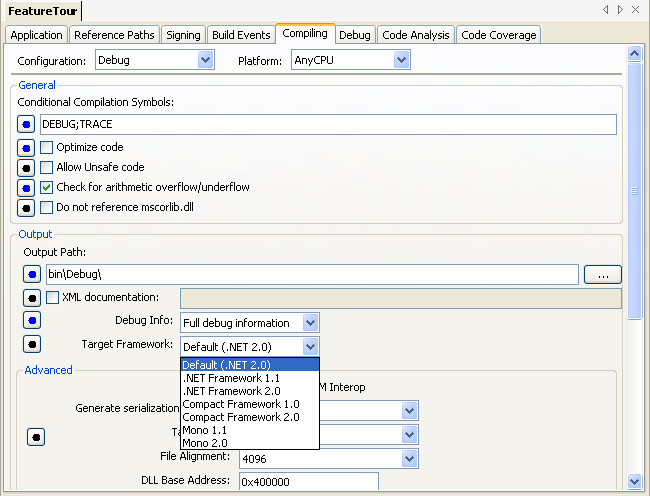

SharpDevelop 2.1, as of revision 2135, now allows you to run your unit tests against .NET 1.1 or .NET 2.0.
Which framework your tests are run under is determined by the target framework your test project. So if you choose .NET 1.1 as your target framework, your tests are run in the .NET 1.1 framework. The project's target framework can be set by selecting Project Options from the Project menu, then opening the Compiling tab.

Only .NET 1.1 and .NET 2.0 are supported, so if you choose another framework, such as one of the Compact Frameworks or Mono SharpDevelop will run your unit tests under .NET 2.0.
There's currently no support for Mono because our modified nunit-console has a threading problem which happens very frequently under Mono, but never seems to occur under Microsoft's .NET Framework.
Since SharpDevelop recently moved to using nunit-console to run unit tests it was a fairly simple task to make it possible to test against .NET 1.1 or .NET 2.0. It is straight forward because nunit-console can be compiled against .NET 1.1. Since SharpDevelop is launching nunit-console as a separate process we could have used one of the following to target one particular framework.
Using an app.config file is the most obvious and well documented way to target a particular framework and is actually how SharpDevelop gets nunit-console to target the different frameworks.
To run unit tests with .NET 1.1 we have nunit-console.exe built against .NET 1.1 and an app.config file, called nunit-console.exe.config which, contains the following:
<configuration>
<!--
The startup section may be used to specify the runtime versions supported
in the order that they will be used if more than one is present.
-->
<startup>
<supportedRuntime version="v1.1.4322" />
</startup>
</configuration>
Note that the actual nunit-console's actual app.config has some extra things which I have removed in the above example so it just shows what is needed to target a particular framework. The < supportedRuntime> element is used to determine which framework the application is run against.
To run against .NET 2.0 we use the same copy of nunit-console, built against .NET 1.1, but with an app.config which has .NET 2.0 as the supported runtime. When you run the unit tests SharpDevelop looks at the project's target framework and runs the corresponding nunit-console.
COMPlus_Version
With Microsoft's .NET framework you can set the COMPlus_Version environment variable before running your .NET application to run it under a particular framework. So at the command line you could execute
SET COMPLUS_Version=v1.1.4322
Then your application would run against .NET 1.1. Specifying a framework in your app.config will override the COMPLUS_Version setting however.
SharpDevelop does not use this method since using an app.config makes it easy to support running unit tests with NCover and the debugger. Using COMPLUS_Version we could not run NCover since it is compiled against .NET 2.0. The debugger would also need to be modified so it could set environment variables before debugging an application.
How do we target another framework with Mono? You can use one of the following:
Again we can use the app.config file as discussed previously. We can also use the new --runtime command line parameter that was added in Mono 1.2.2. This works in a similar way to the COMPLUS_Version environment variable allowing you to set the framework version globally. Using the command line
mono --runtime=v1.1.4322 nunit-console.exe
would run nunit-console under Mono's .NET 1.1 framework.
There is one difference though, specifying the target framework in the app.config does not override this command line setting.
If you want to look at code coverage when running your unit tests under .NET 1.1 you will need to use NCover version 1.5.4 since the latest release 1.5.5 does not work produce any coverage results when profiling a .NET 1.1 assembly.